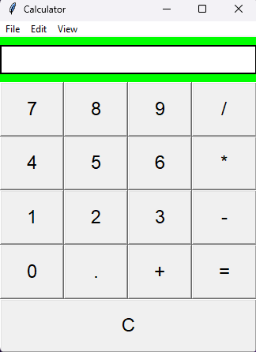

A Python-based calculator with a GUI; it allows users to interact with it via button clicking, as seen in the calculator application which is pre-installed on Windows devices. This calculator allows for basic arithmetic (addition, subtraction, multiplication, and division), as well as error handling in the instance of edge cases.
